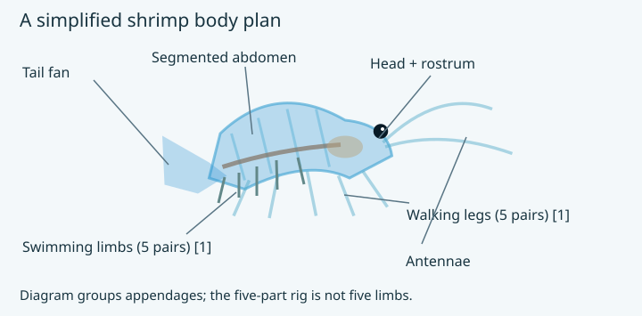
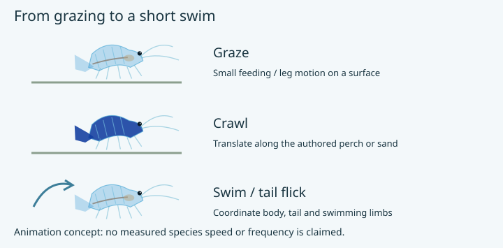

Built for grazing and swimming. Walking legs and abdominal swimming limbs are separate groups. The first two walking-leg pairs help handle food. [1] The current game rig groups these features into five mesh parts.

Behaviour to suggest. These shrimp spend much of their time grazing on biofilms. [1] Resting, crawling and brief swimming excursions are the game’s authored motion states; tail-flick timing is a tunable.